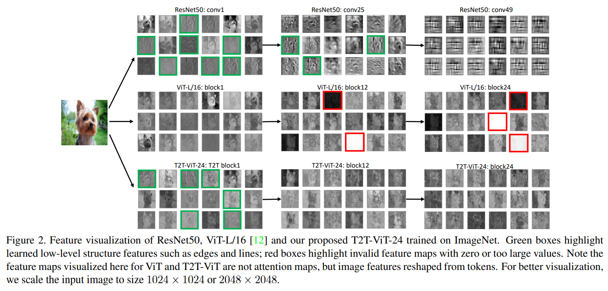

Tokens-to-Token ViT
Contents
Tokens-to-Token ViT#
Abstract & Introduction#
ViT는 image를 split해서 tokens를 sequence로 만듦.
classification분야에서 global한 유의미한 관계를 찾았다.
한계점
midsize dataset(ImageNet)에서 좋은 성능을 보이지는 못했다.
ViT, ResNet, MobileNet에 비해 파라미터 수도 적고, MACs 연산량도 적을 뿐더러 정확도도 높아 성능이 좋다는 것을 보여주고 있다.
local structure(edge, line)를 파악할 수 없다.
많은 학습 데이터가 필요하다
JFT-300M for pretraining
ViT의 attention backbone은 redundancy(불필요한 중복)를 포함하고 있고, 고정된 크기의 토큰을 쪼개는 방식을 통해 limited feature richness를 초래하고 모델을 학습하는데 어려움이 있다.
한계점을 확인하기 위해 pilot study 진행

ResNet
local structure(edge, line, texture)가 bottom layer(conv1) ~ middle layer(conv25) 까지 특징을 잘 뽑힌 것을 볼 수 있다. (green box)
ViT
global relations(강아지 자체)는 잘 잡아내지만, structure information은 modeling 되지 않았다.
모든 층에서 patch들간의 global relation을 파악해 유사한 feature들이 너무 많이 생성되며 local realtion을 표현하는 feature수는 적다.
이는 CNN에서 low layer에서는 local stucture를 파악하고 deep layer에서는 global한 texture, object같은 feature를 파악하는 것과는 다르다.
또한 많은 채널이 zero-value(red box)를 가지고 있다
ResNet만큼 효율적이지 못하고 제한된 feature reichness를 제공한다.
Contribution
따라서 T2T-ViT는 위에서 언급한 문제점(local structure, limited feature richness)을 해결하고자 했다.
제안하는 방법
a layer-wise Tokens-to-Token transformation
an efficient backbone with a deep-narrow structure
Tokens-To-Token Vision Transformer(T2T-ViT)#
Architecture

a progressive tokenization module
surrounding tokens의 local한 structure 정보를 잘 파악하며,
반복적으로 진행되면 tokens의 length를 줄일 수 있다.
a layer-wise “Tokens-to-Token module” (T2T module)
Re-structurization : tokens output(transformer를 거친 후)는 이미지를 reconstruct한다.
\(T' _ i = MLP(MSA(T_i))\)
\(T\) : sequence of tokens
\(I_i = Reshape(T' _ i )\)
Soft split : tokens를 overlapping을 통해 split한다.
\(T_{i+1} = SS(I_i)\)
information loss가 생길 수 있기 때문에 overlapping하면서 split을 진행한다.
이로 인해 surrounding patches는 surrounding tokens간의 강한 correlation을 갖도록 하는 prior가 생긴다.
split patches를 하나의 token으로 concat함으로써 local information이 aggregate될 수 있도록 한다.
첫번째 이미지는 soft split으로 바로 적용되고, 마지막 T2T를 수행한후에 backbone에 들어갈 수 있도록 고정된 길이(\(T_f\))로 바꿔준다.
efficient “T2T-ViT backbone” (deep-narrow architecture)
global attention relation을 찾는 과정
그로 인해 reduce redundancy + improve the feature richness 효과를 나타냈다.
CNN에서 효과적이었던 방법을 가져와봤다.
Dense connection as DenseNet
Deep-narrow vs. shallow-wide structure as in WideResNets
Channel attention as Squeeze-an-Excitation (SE) Networks
More split heads in multi-head attention layer as ResNeXt
Ghost operations as GhostNet
실험적으로 Deep-narrow, channel attention이 좋았다.
그중 최고는 channel attention
Wide-Resnet의 Shallow-wise structure는 performance에서 8%의 큰 성능 저하, DN에서는 성능 향상 → 즉, Deep-Narrow 좋다!
dense net: Transformer Layer로 이루어진 Block을 구성하고, Block간 Dense Connection 구성 → ViT와 T2T 둘다 성능 저하.
SE의 channel attention ViT와 T2T-ViT 모두 좋음
ResNeXt : multi head 수 많게 → GPU 메모리 많이 차지한다.
Ghost operation : parameters and MAC가 줄어들었으나 성능 또한 저하
Classification
T2T를 거친 토큰에 위치 정보(Sinusoidal Position Embedding)와 cls token을 추가해 Transformer layer에 들어간다.
cls token만 MLP Head에 들어가 classification을 수행한다.
실험적으로 transformer layer(\(b\))는 많게, hidden dim, channel(\(d\))은 작게 구성하는 것이 성능이 더 좋다.
Experiments#
T2T vs DeiT, ViT
파라미터 수, MACs가 적어졌고 정확도 ↑
T2T vs ResNet
파라미터 수, MACs가 적어졌고 정확도 ↑
Transfer learning in downstream dataset
파라미터 수 적어졌고, 정확도 ↑
Abliation study
soft split in T2T module
\(T2T-ViT-14\) (Performer)
\(T2T-ViT_t-14\) (Transformer)
\(T2T-ViT_c-14\) (Convolution)
Conclusion#
the structure information(edge, line) of images
enhances feature richness, overcoming limitations of ViT
novel tokens-to-token (T2T) process
to progressively tokenize images to tokens
structurally aggregate tokens
Author by 이준형
Edit by 김주영